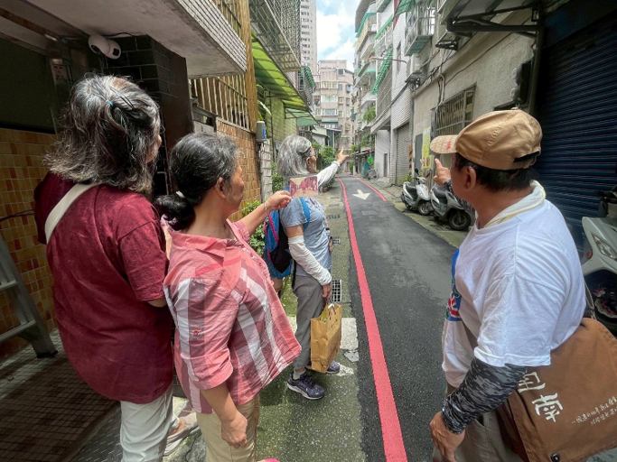

把耳朵貼近地方
這一頁保留一次偶遇的珍貴。劉家夫婦的記憶裡，有清澈圳水、防空洞、碧潭渡船與後街生活；那些看似細碎的往事，正是地方最溫柔也最真實的生活紋路。

紀錄者
侯淑敏
紀錄類別 （可複選）
▄人物（對象名稱劉俐君之父母（劉家夫婦）） □商店（類別） □老樹□老建築 □自然景點 □特色景觀 ▄史蹟 □其他（ ）
所在位置
地址：新店區新店後街
紀錄摘要
（一）摘要
這份資料紀錄對新店在地耆老劉姓夫婦的訪談口述，生動地描繪了碧潭與大坪林地區數十年來的環境變遷。受訪者回憶起童年時期清澈見底的灌溉水圳，當時孩子們能在溝渠中戲水捕魚，與現今受污染的水質形成鮮明對比。對話中，詳述了昔日碧潭吊橋的構造、和美煤礦透過渡船與輸送帶運煤的產業歷史，以及住家附近密布的防空洞系統。此外，長輩們也談及了新店國小周邊的地景更迭，並對現今將老街巷弄戲稱為「摸乳巷」的說法表示不認同。透過這些瑣碎卻珍貴的生活細節，展現了在地居民對大自然消逝的感嘆與對家鄉深厚的情感。
（二）記錄涵蓋當地環境變遷、防空洞與瑠公圳歷史，及早年生活記憶，主題如下：
1. 劉家夫婦與地方背景
居住歷史：劉家三代在新店後街附近生活，是道地的在地人（土生土長）。
地理位置：他們的住家與娘家分布在新店後街、國校路及開天宮附近。
2. 消失的水圳記憶（瑠公圳與大坪林圳）
清澈的水源： 80 年前，當地的水溝（瑠公圳分流）非常乾淨，甚至可以直接飲用。
童年樂園：小孩會在水溝裡游泳、玩水，水中還有鰻魚、鱔魚、小蝦及溪哥。
環境污染：隨著時代變遷與畜牧業（如養雞）的出現，水源開始受到污染，原本的灌溉水圳後來逐漸變成了下水道，有些地段甚至蓋上了水泥蓋。
3. 神秘的防空洞網絡
規模與設施：當時的防空洞系統非常發達，內部甚至有房間和灶台，且通風良好、冬暖夏涼。
地底通道：防空洞有多個出入口（劉大嫂記憶中有四個出口），有的可以通往北新路（待證實），有的則可以直接通向新店國小。
生活用途：劉大嫂回憶小時候常在洞裡玩耍，不需要點蠟燭也能摸黑進去；家裡甚至曾在洞口養雞、養鴨，夏天還會搬藤椅進去避暑。
4. 和美煤礦與煤炭運輸
採礦歷史：碧潭西岸曾有和美煤礦。
運輸流程：煤礦從西岸透過船運送到東岸，再利用輸送帶將煤塊從船上運到卡車或火車上，最後經由萬新鐵路（新店至萬華）載走。
貧苦回憶：早期家境較差的人家，會到河邊撿拾掉落的煤塊回家使用，甚至有人會潛水下去撿大塊的煤炭。
5. 碧潭與生活變遷
碧潭吊橋：以前的吊橋較窄，連小車都能開上去，橋下有水泥柱支撐防止晃動。
自然景觀：早期碧潭水深且清澈，婦女會到河邊洗衣服，石頭縫裡隨處可見螃蟹；河裡有香魚。
地方正名：劉大哥對於遊客將當地通道稱為「摸乳巷」表示十分不滿。此通道原不是既定的巷弄，是心善的林姓地主為方便鄰人走動而特意讓地留道，如此稱呼對原住戶根本不尊重。